Chapter 9 Gráficos
Agrupar los datos, ya sea numéricamente o gráficamente, es un paso muy importante en el análisis de datos. Una de las ventajas de R es su gran capacidad para elaborar gráficos, sus aplicaciones van desde una primera consulta exploratoria de datos hasta la generación de imágenes complejas y de alta cálidad.
Existen tres principales sistemas para generar gráficos en R:
base R graphics: Es el sistema de graficación base que está implementado en R desde sus inicios. Es bastante útil para realizar gráficas simples con el objetivo de un primer análisis exploratorio a los datos. Su principal función es
plot, este comando permite crear un gráfico sencillo, adicionalmente se deben elegir y emplear funciones menores, comolinesytext, para agregar información o mejorar el diseño del gráfico.lattice: Es un paquete de R. Una de sus ventajas es que la mayoría de sus gráficos son generados empleando una sola función, por lo tanto no hay necesidad de implementar funciones menores para modificar la apariencia del gráfico, ya que muchas de las específicaciones vienen por default en los comandos. Principalmente
latticeestá impelmentado para crear gráficos de alto nivel, como gráficas de líneas, gráficas de barras apiladas, gráficas de contorno y dividirlos por variables de agrupación.ggplot2: Es la librería de graficación que se empleará principalmente en este curso. En el siguiente apartado se presentan de manera más amplia sus aplicaciones. El paquete
ggplot2es bastante popular por su capacidad para realizar gráficos de gran calidad de una manera relativamente sencilla basado en La Grámatica del Gráfico.
9.1 Visualización de datos con ggplot2
9.1.1 Introducción
La visualización de datos es una herramienta poderosa en el análisis de datos, permitiendo comunicar información compleja de manera intuitiva y efectiva. ggplot2 es un paquete en R que facilita la creación de gráficos de calidad de publicación de manera sencilla. Este documento proporciona una introducción a ggplot2 y ejercicios para practicar.
9.1.1.1 La Grámatica de los Gráficos
El paquete ggplot2 está insipirado en el libro Grammar of Graphics por Leland Wilkinson, de ahí parte de su nombre “gg”. Su principal enfoque es la creación de gráficos considerando sus distintos componentes y que el usuario sea capaz de manipular cada una de esas partes con base en necesidades específicas que permitan una óptima representación e interpretación de los datos.
Los componentes que considera ggplot2 para la construcción de un gráfico son los siguientes:
Data: Datos que se emplean para la creación del gráfico.
Mapping: La manera de mapear las variables de los datos a propiedades visuales del gráfico como el color, el tamaño, la forma o la posición.
Geoms: El tipo de gráfico empleado: puntos, barras, líneas…
Facets: Permite dividir el gráfico en múltiples paneles según los niveles de una o más variables categóricas.
Statistics: Son las técnicas estadísticas que son aplicadas a los datos previo a su visualización.
Coords: El tipo de coordenadas empleadas para mapear los datos. Por ejemplo: cartesianas, polares, logarítmicas…
Scales: Asigna los valores de los datos a los valores visuales. Por ejemplo: Que a valores más pequeños les corresponda un tono más claro de color.
Themes: Controlan los aspectos visuales del gráfico, como los colores, las fuentes, los tamaños de los ejes, los márgenes…
NOTA Para conocer a profundidad e identificar de manera específica cada uno de estos componentes se puede consultar la siguiente Guía para la contrucción de un gráfico con ggplot2
9.1.3 Creación de un gráfico básico
Vamos a comenzar con un gráfico de dispersión simple utilizando el conjunto de datos mtcars.
ggplot(data = mtcars, aes(x = wt, y = mpg)) +
geom_point() +
labs(title = "Consumo de Gasolina vs. Peso",
x = "Peso (1000 lbs)",
y = "Millas por Galón (mpg)")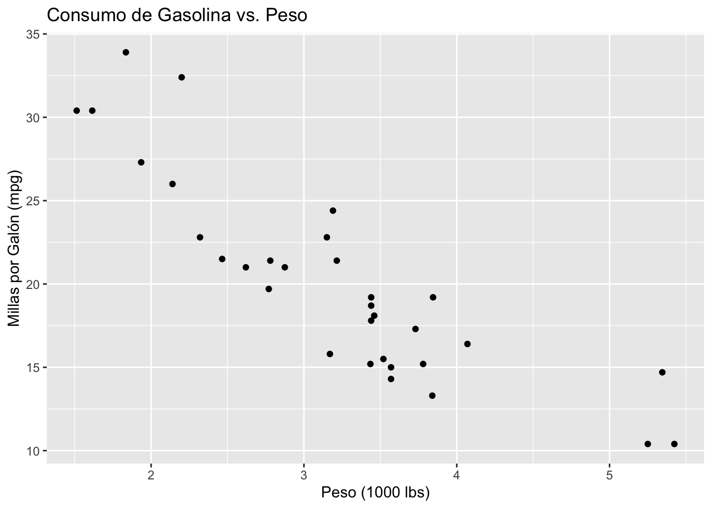
9.1.4 Personalización de gráficos
Ahora, personalizaremos el gráfico cambiando colores y añadiendo una línea de tendencia.
ggplot(data = mtcars, aes(x = wt, y = mpg, color = factor(gear))) +
geom_point() +
geom_smooth(method = "lm", se = FALSE) +
labs(title = "Consumo de Gasolina vs. Peso por Tipo de Cambio",
x = "Peso (1000 lbs)",
y = "Millas por Galón (mpg)",
color = "Tipo de Cambio") +
theme_minimal()## `geom_smooth()` using formula = 'y ~ x' #### Ejercicios sugeridos
#### Ejercicios sugeridos
- Explora otro conjunto de datos: Utiliza el conjunto de datos iris para crear un gráfico de dispersión que muestre la relación entre Sepal.Length y Sepal.Width. Colorea los puntos según la especie.
- Personaliza tu gráfico: Añade títulos personalizados a los ejes y al gráfico. Experimenta con diferentes temas, como theme_bw() o theme_light().
- Exploración de geométricas: Utiliza geom_histogram() para crear un histograma del Sepal.Length en el conjunto de datos iris. Ajusta los parámetros binwidth y fill.
- Facetas para múltiples gráficos: Utiliza facet_wrap(~ species) para crear gráficos separados para cada especie en el conjunto de datos iris, mostrando la relación entre Sepal.Length y Sepal.Width.
9.1.5 Soluciones a los ejercicios sugeridos
ggplot(data = iris, aes(x = Sepal.Length, y = Sepal.Width, color = Species)) +
geom_point() +
labs(title = "Relación entre el Largo y el Ancho del Sépalo por Especie",
x = "Largo del Sépalo",
y = "Ancho del Sépalo")
ggplot(data = iris, aes(x = Sepal.Length, y = Sepal.Width, color = Species)) +
geom_point() +
labs(title = "Relación entre el Largo y el Ancho del Sépalo por Especie",
x = "Largo del Sépalo",
y = "Ancho del Sépalo") +
theme_light() +
theme(legend.title = element_blank())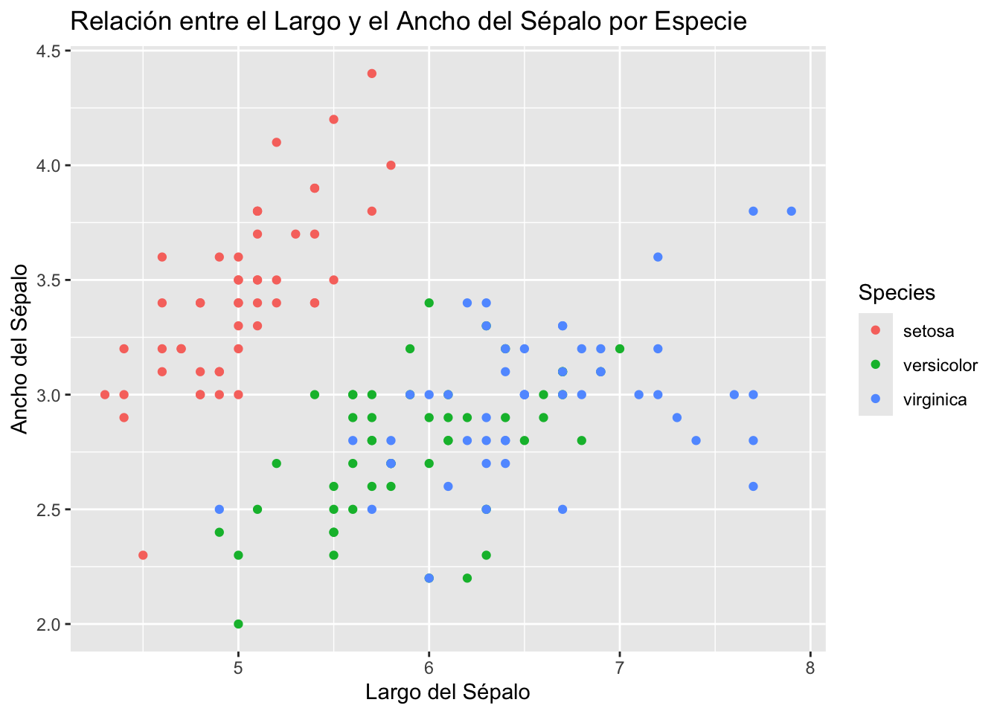
ggplot(data = iris, aes(x = Sepal.Length)) +
geom_histogram(binwidth = 0.5, fill = "blue") +
labs(title = "Distribución del Largo del Sépalo",
x = "Largo del Sépalo",
y = "Frecuencia")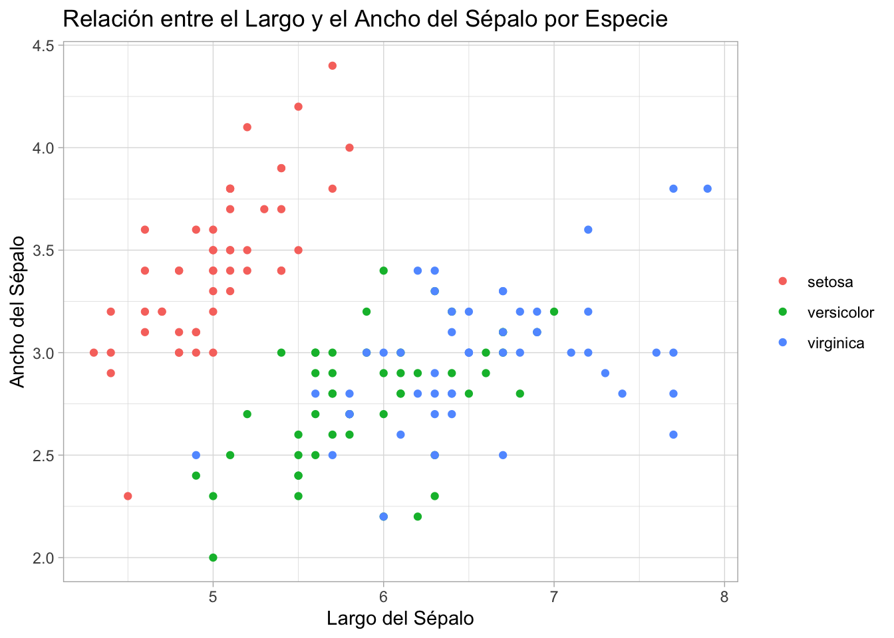
ggplot(data = iris, aes(x = Sepal.Length, y = Sepal.Width)) +
geom_point() +
facet_wrap(~ Species) +
labs(title = "Relación entre el Largo y el Ancho del Sépalo por Especie",
x = "Largo del Sépalo",
y = "Ancho del Sépalo")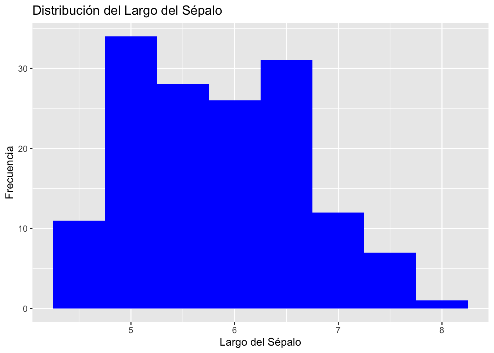
9.1.6 Ejercicios resueltos
En esta sección usaremos la librería palmerpenguins
9.1.6.1 Ejercicio 1: Gráfico de dispersión básico
Crea un gráfico de dispersión para visualizar la relación entre la longitud del culmen y la profundidad del culmen de los pingüinos.
## Warning: Removed 2 rows containing missing values or values outside the scale range
## (`geom_point()`).
9.1.6.2 Ejercicio 2: Diferenciación por especie
Modifica el gráfico de dispersión anterior para diferenciar los puntos por especie de pingüino.
## Warning: Removed 2 rows containing missing values or values outside the scale range
## (`geom_point()`).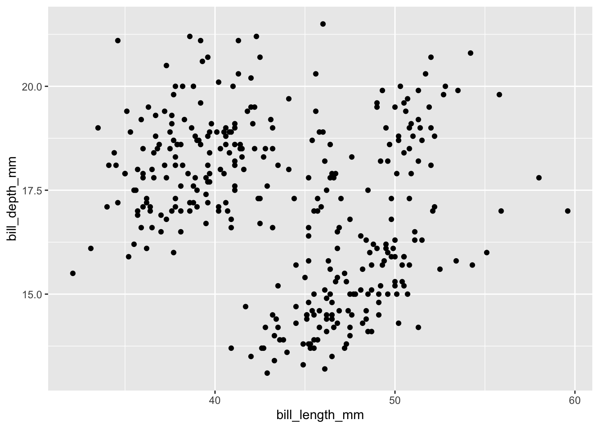
9.1.6.3 Ejercicio 3: Histograma de masa corporal
Crea un histograma para explorar la distribución de la masa corporal de los pingüinos.
## Warning: Removed 2 rows containing non-finite outside the scale range
## (`stat_bin()`).
9.1.6.4 Ejercicio 4: Barras de error por especie
Genera un gráfico de barras que muestre la masa corporal media de los pingüinos por especie, incluyendo barras de error.
ggplot(penguins, aes(x = species, y = body_mass_g)) +
geom_bar(stat = "summary", fun = "mean") +
geom_errorbar(stat = "summary", fun.data = mean_se, width = 0.2)## Warning: Removed 2 rows containing non-finite outside the scale range
## (`stat_summary()`).
## Removed 2 rows containing non-finite outside the scale range
## (`stat_summary()`).
9.1.6.5 Ejercicio 5: Boxplot de profundidad del culmen
Crea un boxplot para comparar la profundidad del culmen entre las diferentes especies de pingüinos.
## Warning: Removed 2 rows containing non-finite outside the scale range
## (`stat_boxplot()`).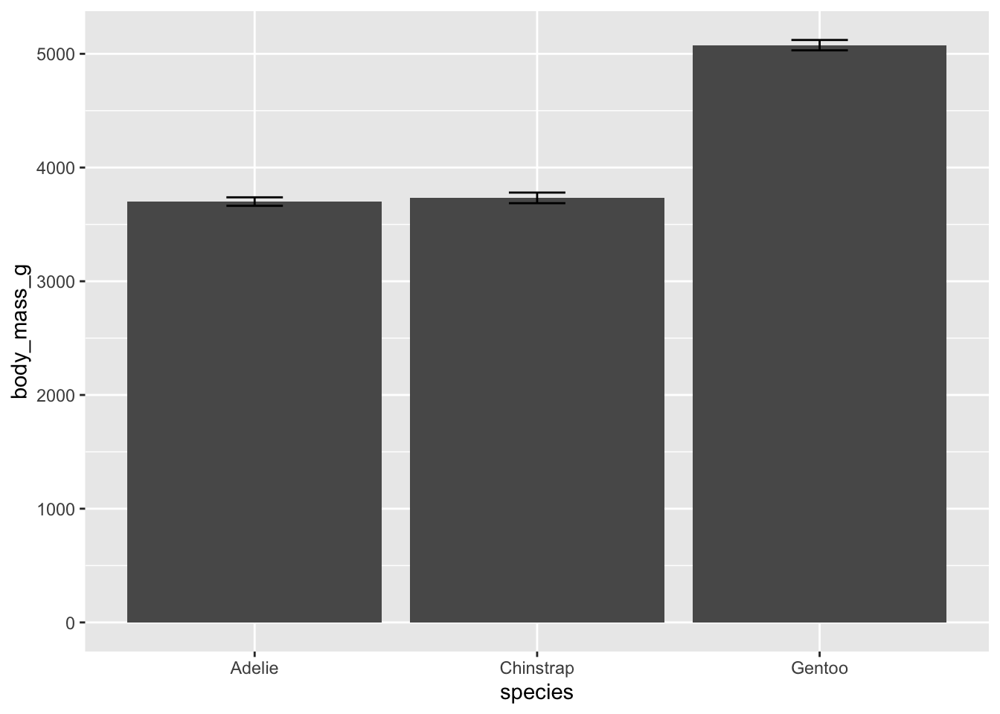
9.1.6.6 Ejercicio 6: Facetado por islas
Repite el gráfico de dispersión de longitud vs. profundidad del culmen, pero esta vez facetado por la isla de origen.
## Warning: Removed 2 rows containing missing values or values outside the scale range
## (`geom_point()`).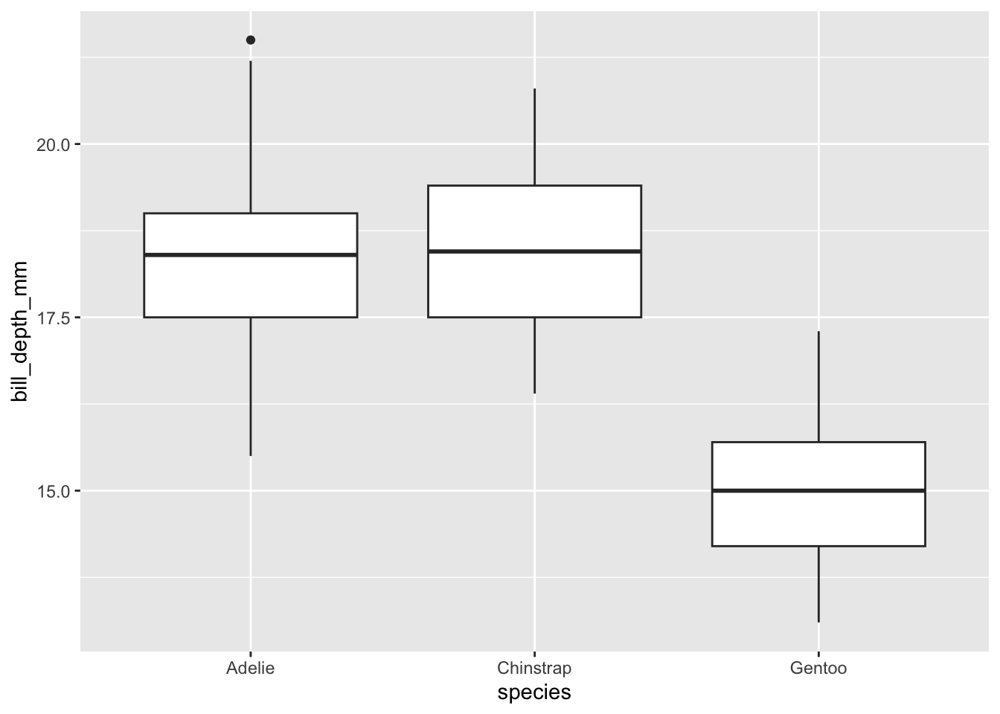
9.1.6.7 Ejercicio 7: Densidad de masa corporal
Muestra la densidad de la distribución de la masa corporal de los pingüinos utilizando un gráfico de densidad.
## Warning: Removed 2 rows containing non-finite outside the scale range
## (`stat_density()`).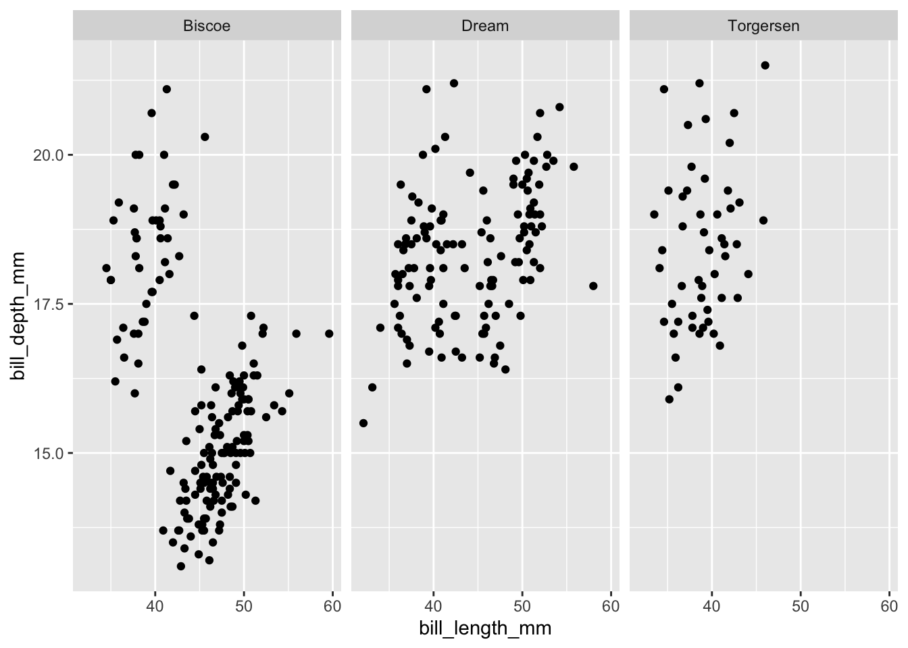
9.1.6.8 Ejercicio 8: Gráfico de violín de la longitud del culmen
Genera un gráfico de violín para visualizar la distribución de la longitud del culmen por especie.
## Warning: Removed 2 rows containing non-finite outside the scale range
## (`stat_ydensity()`).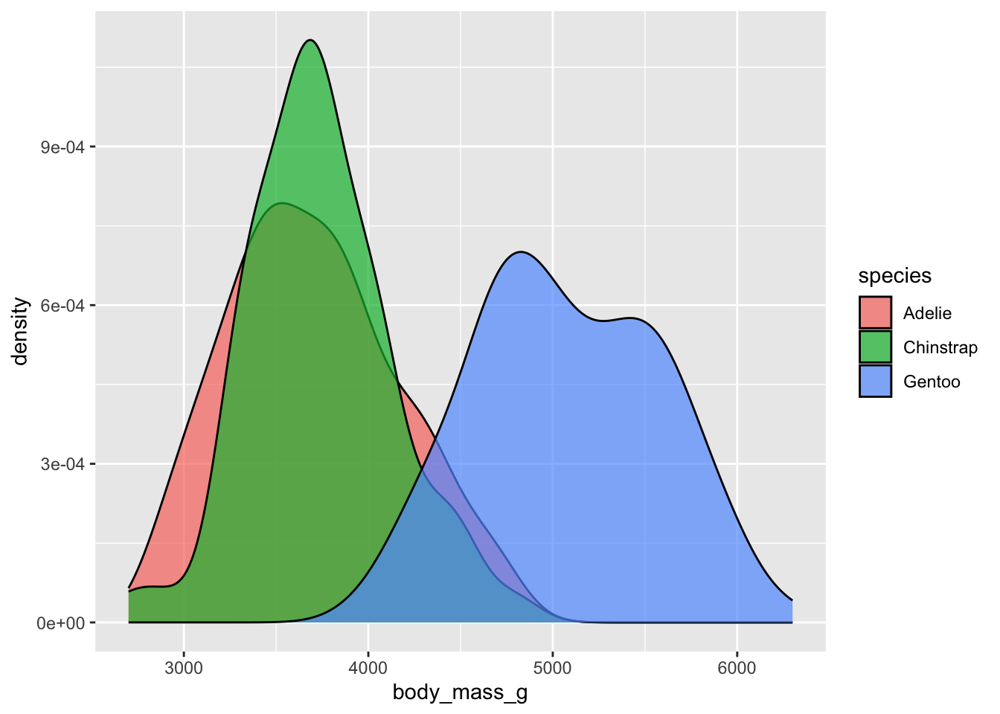
9.1.6.9 Ejercicio 9: Puntos superpuestos en boxplot
Crea un boxplot de la profundidad del culmen por especie y superpón los puntos de datos individuales.
ggplot(penguins, aes(x = species, y = bill_depth_mm)) +
geom_boxplot(alpha = 0.5) +
geom_jitter(width = 0.2)## Warning: Removed 2 rows containing non-finite outside the scale range
## (`stat_boxplot()`).## Warning: Removed 2 rows containing missing values or values outside the scale range
## (`geom_point()`).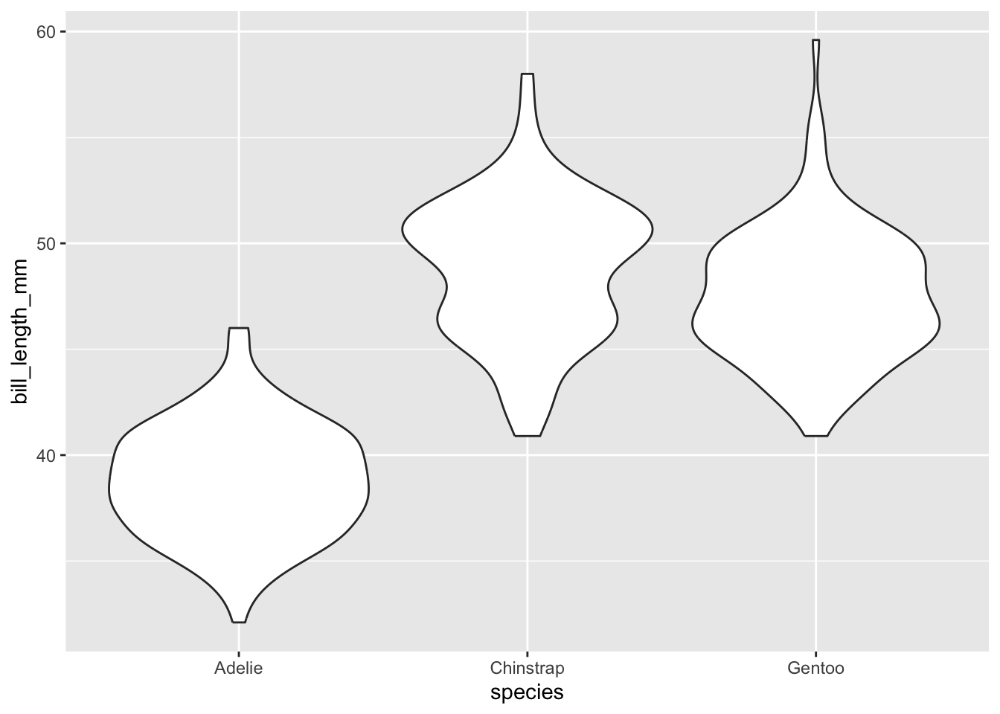
9.1.6.10 Ejercicio 10: Gráfico de líneas de masa corporal promedio a lo largo del tiempo
Asumiendo que los datos estén ordenados temporalmente, muestra cómo cambia la masa corporal promedio a lo largo del tiempo.
# Asumiendo que 'year' representa el tiempo en tus datos
ggplot(penguins, aes(x = year, y = body_mass_g, group = 1)) +
geom_line(stat = "summary", fun = "mean")## Warning: Removed 2 rows containing non-finite outside the scale range
## (`stat_summary()`).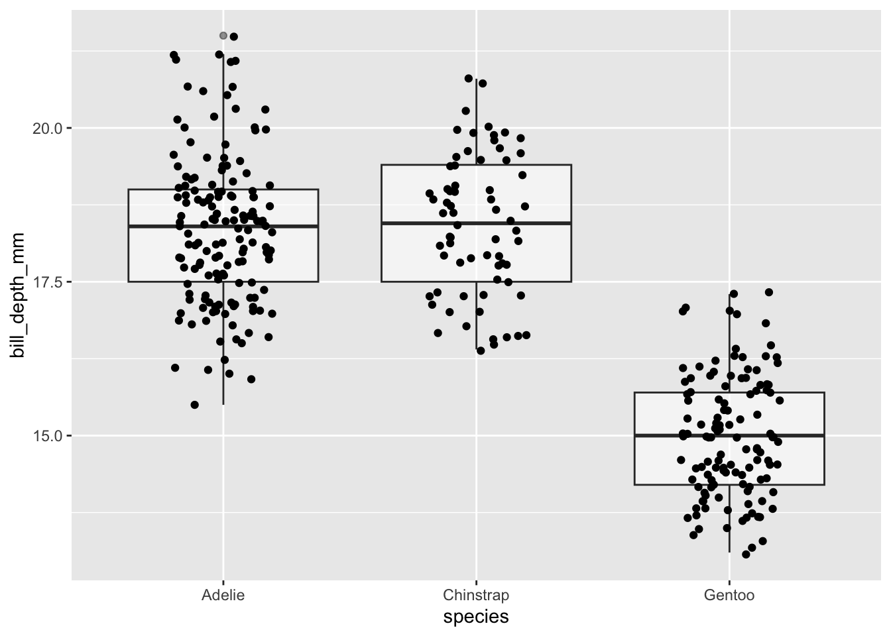
9.1.6.11 Ejercicio 11: Gráfico de dispersión con tamaño de punto
Modifica el gráfico de dispersión de longitud vs. profundidad del culmen para que el tamaño de los puntos refleje la masa corporal de los pingüinos.
ggplot(penguins, aes(x = bill_length_mm, y = bill_depth_mm, size = body_mass_g)) +
geom_point(alpha = 0.5)## Warning: Removed 2 rows containing missing values or values outside the scale range
## (`geom_point()`).
9.1.6.12 Ejercicio 12: Barras apiladas de especies por isla
Crea un gráfico de barras apiladas que muestre la cantidad de pingüinos de cada especie presentes en cada isla.
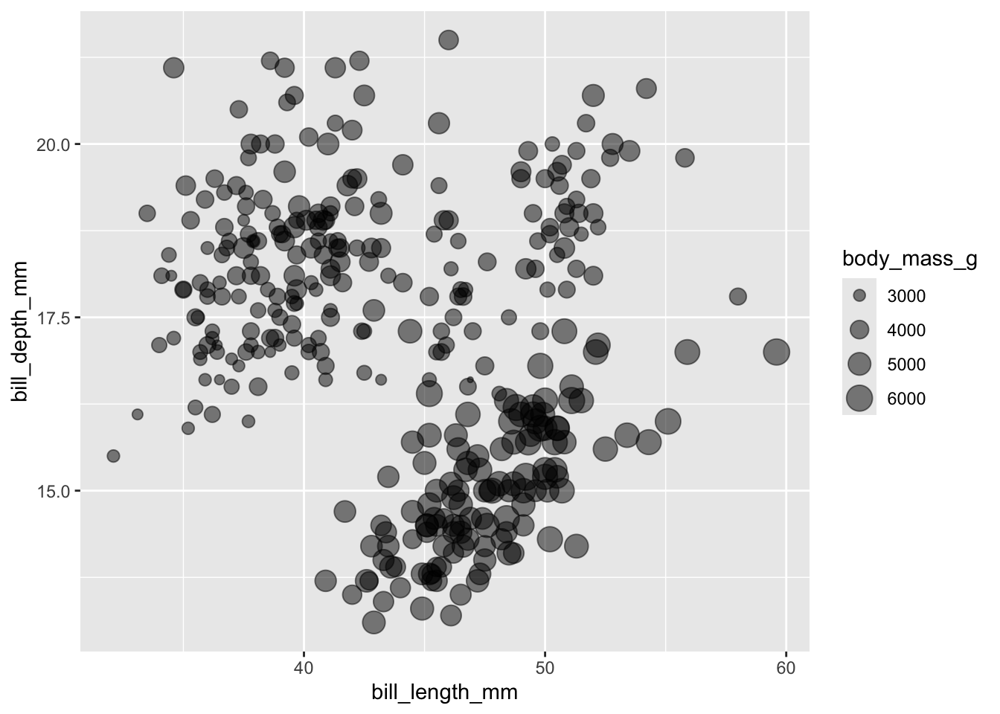
9.1.6.13 Ejercicio 13: Gráfico de correlación con texto
Genera un gráfico de dispersión entre la longitud y la profundidad del culmen e incluye un texto que muestre el coeficiente de correlación en el gráfico.
library(ggpubr)
ggplot(penguins, aes(x = bill_length_mm, y = bill_depth_mm)) +
geom_point() +
stat_cor(method = "pearson", label.x = 3, label.y = 50)## Warning: Removed 2 rows containing non-finite outside the scale range
## (`stat_cor()`).## Warning: Removed 2 rows containing missing values or values outside the scale range
## (`geom_point()`).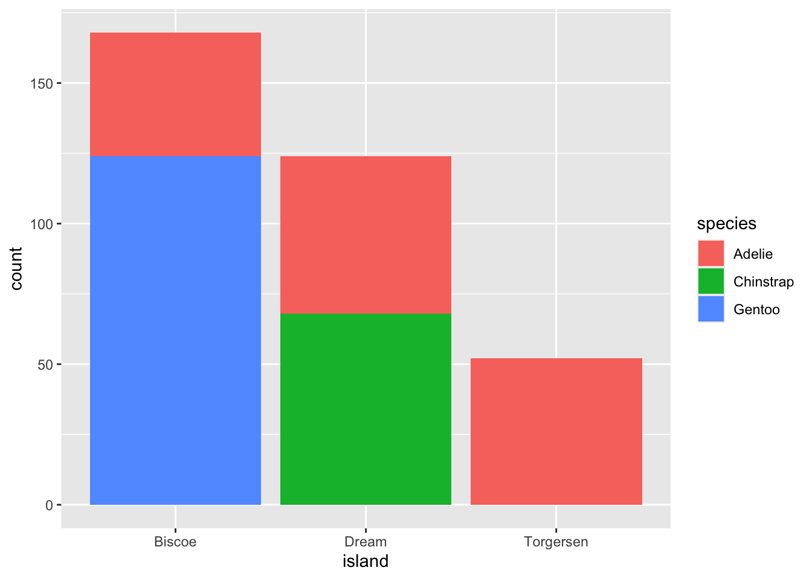
9.1.6.14 Ejercicio 14: Mapa de calor de la longitud y profundidad del culmen
Crea un mapa de calor que muestre la distribución conjunta de la longitud y la profundidad del culmen de los pingüinos.
## Warning: Removed 2 rows containing non-finite outside the scale range
## (`stat_bin2d()`).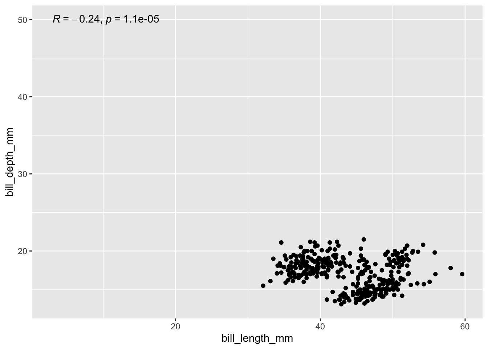
9.1.6.15 Ejercicio 15: Gráfico de interacción entre tres variables
Explora la relación entre la longitud del culmen, la profundidad del culmen y la masa corporal, diferenciando por especie.
ggplot(penguins, aes(x = bill_length_mm, y = bill_depth_mm, color = body_mass_g)) +
geom_point() +
facet_wrap(~species)## Warning: Removed 2 rows containing missing values or values outside the scale range
## (`geom_point()`).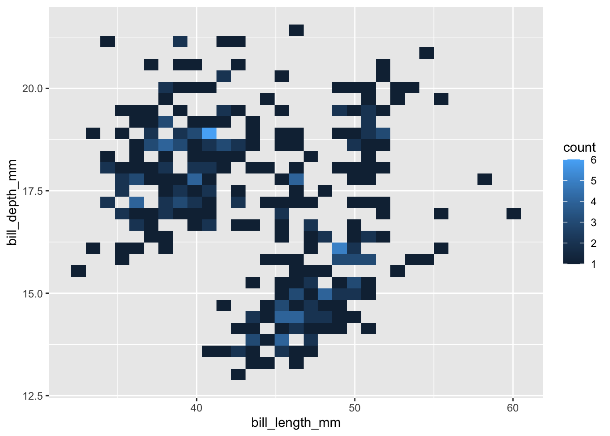
9.1.6.16 Ejercicios propuestos
Gráfico de dispersión con facetas por sexo Crea un gráfico de dispersión para examinar la relación entre la longitud del culmen y la profundidad del culmen, separando los datos por sexo de los pingüinos utilizando facetas.
Comparación de masa corporal entre islas Utiliza un gráfico de barras para comparar la masa corporal media de los pingüinos en las diferentes islas.
Gráfico de densidad por sexo Genera gráficos de densidad para la longitud del culmen, diferenciados por sexo de los pingüinos.
Gráfico de líneas de tendencia para la profundidad del culmen Crea un gráfico que muestre la tendencia de la profundidad del culmen a lo largo del tiempo para cada especie de pingüino.
Mapa de calor de la correlación entre variables numéricas Utiliza funciones de
ggplot2para crear un mapa de calor que muestre la correlación entre las variables numéricas de los datos de pingüinos.Gráfico de barras de conteo por especie Crea un gráfico de barras que muestre el número de observaciones (conteo) para cada especie de pingüino.
Análisis de outliers en la masa corporal Utiliza un boxplot para identificar outliers en la masa corporal de los pingüinos y diferencia por especie.
Gráfico de dispersión con modelado lineal Crea un gráfico de dispersión de la longitud vs. profundidad del culmen e incluye una línea de tendencia lineal.
Barras apiladas de conteo por isla y especie Genera un gráfico de barras apiladas que muestre el número de pingüinos de cada especie en cada isla.
Gráfico de violín con puntos individuales Crea gráficos de violín para la masa corporal de los pingüinos por especie e incluye los puntos individuales de los datos.